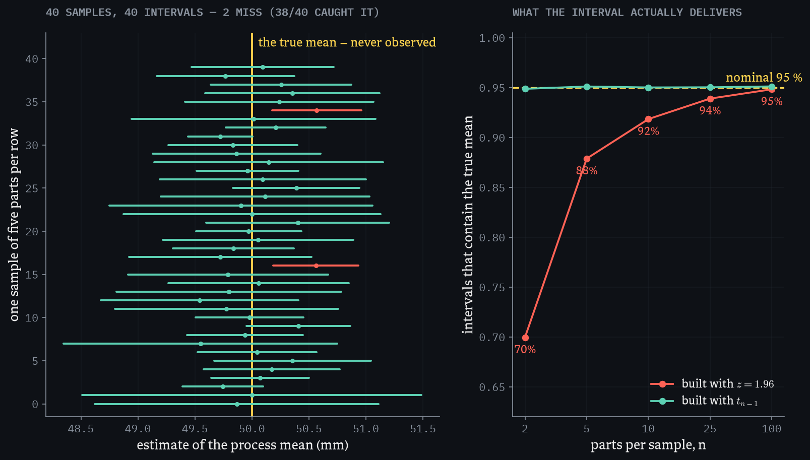
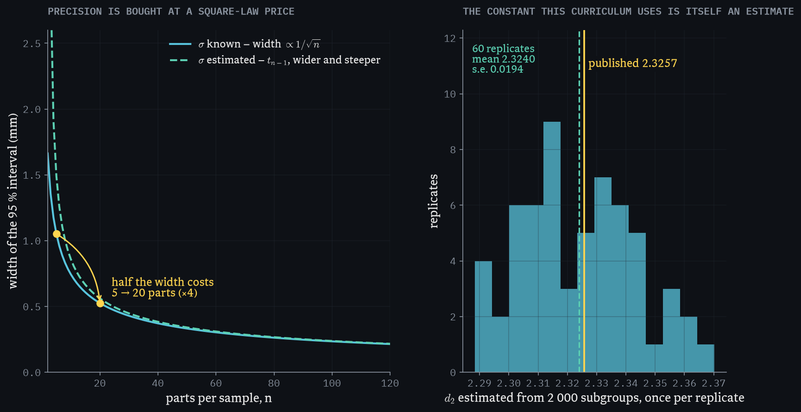

Level 5 · chapter five
Estimation and uncertainty
Every number on a control chart is an estimate, including the constants. This is where an estimate gets an error bar.
You measure 5 parts. Their average is 50.02 mm and they scatter by about 0.03 mm. How close is 50.02 to the machine's true average?
after Level 4 — the average is predictable·leads to Level 6 — limits are a hypothesis test
- 5.1Every number here is an estimatethe standard error is the size of being wrong
- 5.2What “ninety-five percent” has to earnactcoverage is counted, not claimed
- 5.3Why t exists1.96 delivers 88 % at five parts, not 95
- 5.4Precision has a priceinteractivehalving an interval costs four times the parts
- 5.5Including ours is simulated, so it has a standard error too
Every number here is an estimate
Nobody ever sees a process’s true average or spread. Every number on a chart is a guess from a handful of parts, and you can work out how far such guesses usually miss.
Somewhere behind a process there is a real mean and a real spread. what Level 4 gaveThe sampling distribution, and the width . This level puts an error bar on it.Nobody on a shop floor has ever seen either of them. Every number on every chart in this curriculum is a guess made from a handful of parts.
Take five parts and average them: that average is an estimate, and it is wrong by a little. samples of 5σ of the parts0.60 mmσ/√5 predicted0.2683 mmspread observed0.2677 mmTake another five and it is wrong by a different amount. Do it enough times and the estimates make a shape of their own — narrower than the parts, and with a width you can predict before measuring anything.
That width is the standard error, and it is the size of being wrong. spoken · 0:52“Sigma over root n. Here it is the size of being wrong.”Everything in this chapter is built out of it.
What “ninety-five percent” has to earn
A “95 percent” range should catch the true value 95 times in 100. Draw a range from each of many samples and count how many actually catch it.
An interval is the estimate plus and minus a margin, and the margin is 1.96 standard errors. not the parameterThe interval varies from sample to sample. The mean it is chasing does not.That number comes from the bell: 95 % of it lies within 1.96 sigmas of the centre, which 4.5 worked out. Build one interval from every sample and it is the interval that moves; the truth stays where it is. So the way to check a confidence level is not to argue about it — it is to count.
Draw an interval per sample and mark the ones that missed. samples of 5, t multiplierintervals drawn40nominal95 %counted95.1 %On a shop floor you would never know which kind you were holding, and that is precisely the point: the confidence level is a property of the procedure, not of the interval in your hand.


Why t exists
With only five parts you must guess the spread too, and small samples often guess it too small. Ranges built that way miss more often than promised, so they must reach further out.
You build a “95 %” range for the true average from 5 parts, using the usual multiplier 1.96 and the spread of those same 5 parts. How often does the range miss?
The standard error is σ/√n, and nobody knows σ, the true spread. a “95 %” interval built with 1.96n = 270.0 %n = 587.9 %n = 1091.8 %n = 2593.9 %n = 10094.8 %All you have is s, the spread of the same five parts, so s goes where σ should be. Keep 1.96 anyway and count what you actually get.
At 5 parts the interval that advertises ninety-five delivers 87.9. the substitutionNot a correction bolted on. It is what the arithmetic gives when the spread is guessed too.The reason is luck in the spread. Five parts often happen to sit close together: in 26 % of samples s comes out below 70 % of the true σ. Those samples build intervals that are too narrow: they miss 31 % of the time against 6 % for the rest, and supply 66 % of all the misses. 1.96 was worked out for a spread known exactly, and this one was guessed.
The fix is to reach further out: far enough that, lucky-narrow samples included, 95 % of intervals still catch the mean. How far depends only on how many parts the spread came from.
The estimate, plus and minus a margin built from the spread the sample itself reported. The multiplier has to know how few parts the spread came from, which is the whole of what t is for.
In 1908 William Gosset, a chemist at the Guinness brewery who published as “Student”, worked that distance out. the 95 % t multipliern = 212.706n = 52.776n = 102.262n = 252.064n = 1001.984spread known1.960in a spreadsheetT.INV.2T(0.05, n − 1) returns the multiplier.His table is the t distribution. With 5 parts the multiplier is 2.776; with 100 it is 1.984, almost 1.96 again, because 100 parts pin the spread down. The table is indexed by n − 1, called the degrees of freedom: the same n − 1 Level 3 divided by. Five parts leave four.
So 1.96 is the multiplier when the spread is known, and 2.776 is the multiplier when the spread was guessed from 5 parts. the same interval built with tn = 294.9 %n = 595.1 %n = 1095.0 %n = 2595.0 %n = 10095.1 %spoken · 2:10“t is not a correction. It is the honest quantile.”Build the interval with it and the count lands where it belongs — at every sample size, not just the comfortable ones.
Precision has a price
To make an estimate twice as precise you need about four times as many parts, not twice as many. Precision gets expensive fast.
So how many parts does it take to be sure? width of the intervaln = 21.663 mmn = 51.052 mmn = 100.744 mmn = 250.470 mmn = 1000.235 mmHold σ known for a moment, so the quantile stops moving and only the is left. The width falls fast at first, and then it stops paying.
Halve the width and the bill is four times the parts: 5 becomes 20. with t it is cheaper13 parts, not 20 — because the quantile is shrinking with the sample too. The square law is the σ-known case.Not double — the error falls as the root, so precision is bought by the square. That is the sentence for anyone who asks for a tighter number without more parts.
- Interval width
- —
- Quantile t
- —
- Caught the truth
- —
- Parts to halve it
- —
The same twenty-four samples every time, so only the sample size is changing. Watch where the width stops paying for itself.
Including ours
Even the fixed numbers this site uses come from simulation, so they are guesses too, with their own error. Pinning one down very precisely takes a huge number of tries.
One last place to point this instrument. at n = 5published2.325760 replicates2.3240its standard error0.0194Every control chart ahead multiplies a range by a constant called , and this site does not look it up — it simulates it. Anything simulated is an estimate.
Run that simulation sixty times over and the answers scatter. why it still says 2.326Theory earns that digit. Simulation earns three, and only just.The scatter is the standard error of our own constant, and it sets a limit on honesty: earning the third decimal from simulation alone would take 11.5 million subgroups. The fourth figure in the published table is not simulated at all — it comes from the exact integral.


So when Level 6 builds limits out of a range and Level 8 divides by a spread, remember what they are made of. spoken · 3:38“Every constant ahead is an estimate. Now you can price one.”Estimates — with a size you now know how to work out.